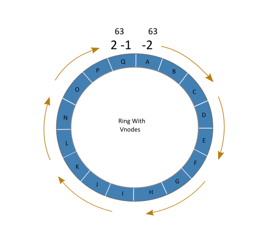

### Cassandra ### - Distributed - Scalable - High availibility - Database
### ACID ### - Atomicity - Consistency - Isolation - Durability
### scaling ### - network storage - master-slave - sharding - masterless
### Data partition ###

### Replication ###
### Write Path ###
### Read Path ###
Slide 2